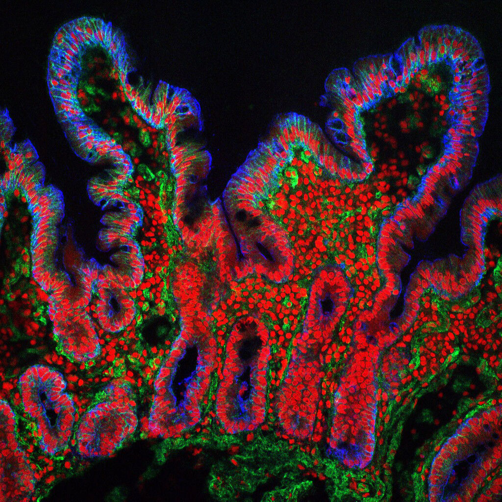
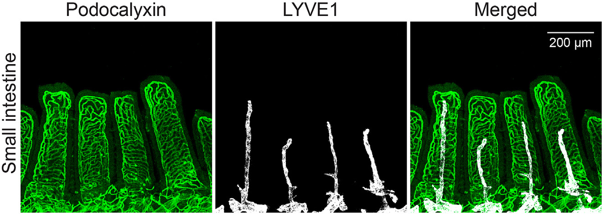

Three scales of intestinal structure
Human mucosal tissue, a prepared mouse enterocyte and independently labelled mouse vessels are separate observations. They are not a continuous zoom or the same specimen.
Human small-intestinal mucosa

Human mucosal cryosection; green integrin, blue cytokeratin, red nuclei. Integrin also labels stroma.
Exact segment, donor condition and calibration not established; no resolved individual transport proteins, microvilli or lacteal identity.
S. Schuller, Wellcome Collection B0007180 · Owning source · CC BY 4.0. Whole unchanged 1024 × 1024 owning IIIF image; no crop/resampling.
Source preparation and exact image identity · Reproduction record
Prepared mouse enterocyte, source Figure 2A

C57BL/6 Rj mouse proximal intestinal enterocyte, 4 h after 200 µL corn-oil/2% cholesterol gavage; freeze-fracture SEM, not live/human.
Original BBM/BLM/Nucl and 4 µm bar; observed droplets are cytosolic lipid droplets, not automatically secreted chylomicrons. No protein pore/real transport observed.
Soayfane et al. (2016), Nutr Metab 13:48, Figure 2A · Owning source · CC BY 4.0. Exact Figure 2A crop from the published PDF image; lossless PNG, without contrast changes or interpolation.
Source preparation and exact image identity · Reproduction record
Separate mouse duodenal vessel networks

Whole-mounted adult mouse small intestine. The protocol specifies duodenum from a 20-week-old mouse, PFA perfusion/fixation and confocal immunostaining. Podocalyxin labels all vessels in green (also dimmer lacteals); LYVE1 labels lymphatic vessels in white.
Projection channels of samefield; not an epithelialboundary map. Different specimen fromhumanmucosa/mouseSEM. Source200µmbar retained. No actual nutrient trajectory, blood flow or universal normality is inferred.
Paavonsalo, Subashi, Lackman & Karaman (2023), STAR Protocols 4:102310, Figure 3 · Owning source · CC BY 4.0. Whole unchanged 1325 × 471 published PDF image; no crop or processing.
Source preparation and exact image identity · Reproduction record